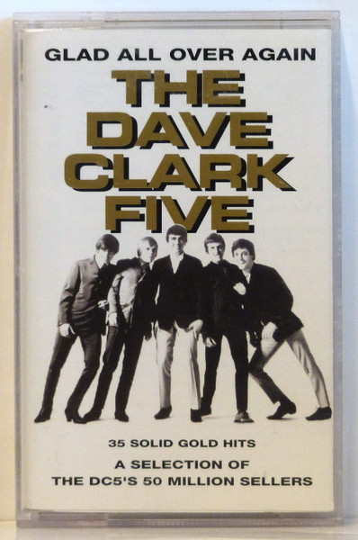

CASSETTE
Glad All Over Again (35 Solid Gold Hits - A Selection Of The DC5's 50 Million Sellers)
The Dave Clark Five
Media: — · Sleeve: —
—
Personal
Discogs SuggestedCA$8.06
Discogs MedianCA$8.06
Discogs HighCA$8.06
- Physical Copy ID
- BB-CAS-102
- Year
- 1993
- Label
- Hollywood Records
- Catalog #
- 96 15224
- Country
- CACanada
- Genre / Style
- Pop · Beat, Rock & Roll